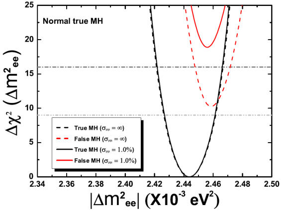
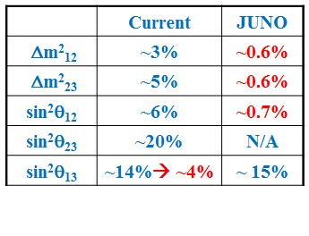
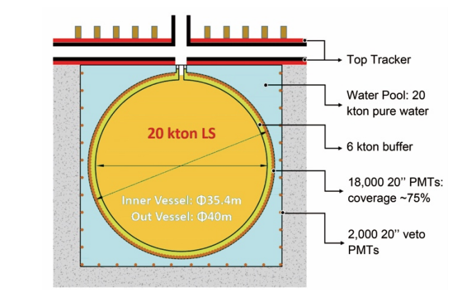

The Jiangmen Underground Neutrino Observatory (JUNO) is a multipurpose neutrino experiment designed to determine neutrino mass hierarchy and precisely measure oscillation parametersby detecting reactor neutrinos from the Yangjiang and Taishan Nuclear Power Plants, observe supernova neutrinos, study the atmospheric, solar neutrinos and geo-neutrinos, and perform exotic searches, with a 20-thousand-ton liquid scintillator detector of unprecedented 3% energy resolution (at 1 MeV) at 700-meter deep underground.
Scientific goals
Neutrinos are elementary particles in the Standard Model.There are three flavors of neutrinos, known as νe, νμand ντ . Theneutrino flavor states are superpositions of three masseigenstates (ν1, ν2 and ν3), which undergo quantum interferenceduring the traveling, causing neutrino flavorchanges. This phenomenon is known as neutrino oscillation or neutrino mixing.The amplitudes of oscillation are connected to themixing angles θ12, θ23 and θ13. The oscillation frequenciesare determined by the difference of squared neutrinomasses, Δm2ij = m2i-m2j.
θ12 and Δm221 were measured by solar neutrino experiments and a reactor neutrino experiment KamLAND.θ23 and |Δm232| were measured by atmospheric and accelerator neutrino experiments. The last unknown mixing angle θ13 was determined to be unexpectedly large by the DayaBay Reactor Neutrino Experiment, as well as otherreactor neutrino experiments Double Chooz and RENO, and accelerator neutrino experiments T2K and MINOS. These measurements open a new era of neutrino experiments.The next generation neutrino oscillation experiments will focus on determining the sign of Δm232 (mass hierarchy), precisely measuring all oscillation parameters and searching for CP violation in the neutrino oscillation.
The major goal of JUNO is determining neutrino mass hierarchy by precisely measuring the energy spectrum of reactor electron antineutrinos at a distanceof ~53 km from the reactors. A relative measurement technique was developed based on the interference of two different oscillation frequency components driven by Δm232 and Δm231, which can reach to a sensitivity of Δχ2>16 in the idea case of single reactor and single detector, and Δχ2>9 considering the spread of reactor cores and uncertainties of the detector response. If the absolute value of Δm2μμ(which is an approximation of Δm232) measured from acceleratorexperimentsis included with a precision of 1%, the sensitivity of mass hierarchy can be improved toΔχ2>25 and Δχ2>16 in the idea and real case, respectively.

Sensitivity of mass hierarchy Precision of oscillation parameters
JUNO is going to improve the precision of Δm221, Δm232 and sin2θ12 to be better than 1%. Considering the precision of sin2θ13 can be measured to ~4% by Daya Bay, the unitarity of the neutrino mixing matrix can be probed to 1% level. Besides, JUNO has other scientific possibilities such as supernova neutrinos, geo-neutrinos, solar neutrinos, atmospheric neutrinos, and exotic searches.
Experiment site and construction
JUNO is located in Kaiping, Jiangmen, in Southern China. It’s about 53 km from the Yangjiang and Taishan nuclear power plants, both of which are under construction.Theplanned total thermal power of these reactors is 36 GW. There is no other nuclear power plant within 200 km. A 270 m high granite mountain provides good shielding of cosmic muons, which are the major sources of backgrounds. To further suppress muon induced backgrounds, the detector is designed to be located deep underground through a tunnel, and the total overburden will be 700 m rock. Experiment construction will start in 2014 and completein 2019, including a tunnel, an underground experiment hall, a water pool, a central detector, a muon tracking detector, and some ancillary facilities.

Detectors
The central detector is filled with 20 kton LAB based liquid scintillator.When neutrinos go through the detector, a very small part of them interact with the liquid scintillator, producing scintillation light, which can be seen by 15,000 surround 20”photomultiplier tubes (PMTs). The energy of incident neutrinos and the interaction vertex can be reconstructed based on the charge and time information of PMT. Energy resolution is roughly in inverse proportion to the square root of detected photon electrons. To reach the expected sensitivity of mass hierarchy, the energy resolution has to be better than 3% at 1 MeV, corresponding to 1,200 photon electrons per MeV, which is a much better performance than the state of the art detector such as BOREXINO and KamLAND. The technical challenges are new type of PMTs with high efficiency and highly transparent liquid scintillator.

A detector concept
The water pool protects the central detector from natural radioactivity in surrounding rocks. It also serves as a water Cherenkov detector after equipped with PMTs, to tag cosmic muons. There is another muon tracking detector on top of the water pool, used to improve muon detection efficiency and to get better muon tracking.
Signal and backgrounds
The reactor electron antineutrino interacts with proton via the inverse β-decay(IBD) reaction in the liquid scintillator, and releases apositron and a neutron. The positron depositsits energy quickly, providing a prompt signal. Theenergy of positron carries most of the kinetic energy of the neutrino.The neutron is captured by proton after an averagetime of 200μs, then releases a 2.2 MeV gamma, providing a delayed signal. The coincidenceof prompt-delayed signals provides a distinctive antineutrino signature. The estimated IBD reaction rate is ~40/day.
The dominate backgroundis accidentals, coming from two uncorrelated backgroundradiation interactions that randomly satisfy the energyand time correlation for inverse β-decay antineutrino selection. It’s designed to be below10% of IBD signals and can be precisely measured in data. Other major backgrounds are introduced by cosmic muons, including cosmogenic β-n isotope 9Li/8He and fast neutrons. Both of them are less than 1% after appropriate muon veto.